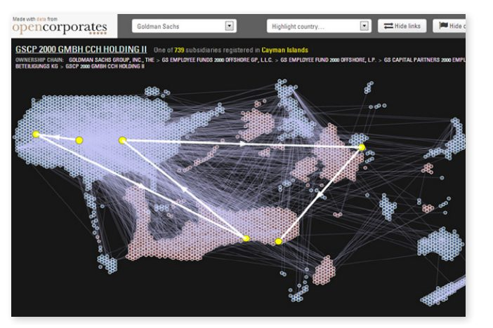

در سال ۲۰۱۳، دولت بریتانیا میزبان اجلاس مشارکت دولت باز (OGP) و ریاست G8 بود. نخستوزیر، دیوید کامرون، از این پلتفرم مشترک برای آغاز روند ایجاد تعهد مثبت نسبت به شفافیت مالکیت ذینفع (شناسایی مالکان واقعی شرکتهای بزرگ - ابزاری کلیدی در حذف توانایی شرکتهای بدون نام برای پوشاندن فساد مالی) استفاده کرد و این پتانسیل را دارد که هنجارهای جهانی را در مورد این مساله به پیش ببرد. در پشت صحنه، ائتلافی از گروههای جامعه مدنی متمرکز بر فساد، تقلب، توسعه خارج از کشور و عدالت مالیاتی، با کمک OpenCorporates، پیشگام دادههای شرکتی باز، دستور کار را هدایت میکردند.
این مطالعه موردی نشان میدهد که چگونه Openase توانست تخصص خود را به منظور ایفای نقشی مهم، حتی جزئی، در موفقیت کمپین شفافیت مالکیت ذینفع، افزایش دهد. این مقاله همچنین در مورد دو مساله در تاثیر منابع دادهباز به عنوان یک محرک برای تغییرات اجتماعی بحث میکند: نقش مستمر حمایت سنتی و محدودیتهای به اصطلاح PSI خروجی.
- پرداختن به مسائل پیچیده مانند فساد و اصلاح حاکمیت به چیزی بیش از باز کردن داده دولت نیاز دارد: موفقیت این فصل در مبارزه برای شفافیت مالکیت ذینفع وابسته به وقوع عواملی از جمله تفکرات سیاسی، رویدادهای خارجی و تلاشهای متمرکز و هماهنگ از سوی سازمانهای حامی سنتی است.
- تخصص OpenCorporates، که از سالها رسیدگی به داده دولتی (آزاد و محدود) درباره شرکتها به دست آمد، نقش مهمی در این موفقیت داشت. OpenCorporates نمیتوانست این موفقیت را به دست آورد.
- نقش جامعه دادهباز نباید فقط استفاده از دادههای دولتی باشد، که به آن دادهها اختصاص داده شدهاست، بلکه باید دادههای دولتی مورد نیاز خود را درخواست کند.
ارزیابی موارد به صورت عددی
مبلغ ۵۶.۴ میلیارد دلار
کل درآمد حاصل از ارزیابی منابع فساد در طول ۱۵۰ تحقیق گسترده، شامل وسایل نقلیه شرکتی که ذینفعان واقعی معاملات مالی را پوشش میدادند.
تعداد شرکتهای تابعه گلدمن ساکس ثبتشده در جزایر کیمن
حوزههای قضایی تحت پوشش پایگاهداده اطلاعات شرکت OpenCorporates
۸۵ میلیون
شرکتهای فهرست شده در پایگاهداده OpenCorporates
پیشینه مطلب
در سال ۲۰۱۰، بانک جهانی گزارشی منتشر کرد که نشان میداد ۲۱۳ تحقیق فساد بزرگ در ۸۰ کشور، ۱۵۰ وسیله نقلیه شرکتی را در بر میگیرد که از ذینفعان واقعی معاملات مالی محافظت میکرد. در این ۱۵۰ مورد، کل درآمد حاصل از فساد به حدود ۵۶.۴ میلیارد دلار رسید. گزارش با عنوان The Puppet Masters: چگونه فاسدها از ساختارهای قانونی برای پنهان کردن داراییهای سرقتشده استفاده میکنند و در مورد آن چه باید کرد، با نمونه مناقصهای که توسط دولت کنیا برای جایگزینی سیستم پاسپورت خود برگزار میشود، آغاز میشود:
علیرغم دریافت پیشنهاد ۶ میلیون از یک شرکت فرانسوی، دولت کنیا قراردادی را برای ۵ برابر آن مبلغ (۳۱.۸۹ میلیون) با شرکت انگلیسی لیزینگ و امور مالی با مسئولیت محدود امضا کرد، یک شرکت خصوصی در بریتانیا که آدرس ثبتشده آن یک صندوق پستی در لیورپول بود. تصمیم دولت کنیا علیرغم این واقعیت گرفته شد که آنگلو لیزینگ پیشنهاد داد که کار واقعی را به شرکت فرانسوی واگذار کند. مطالبی که توسط خبرچینان به مطبوعات درز کرده بود نشان میداد که سیاستمداران ارشد فاسد قصد دارند سرمایههای اضافی معامله را به جیب بزنند. با این حال، تلاش برای بررسی این ادعاها بینتیجه بود، زمانی که معلوم شد یافتن اینکه واقعا چه کسی Anglo - Leasing را کنترل میکند غیر ممکن است.
یکی از توصیههای کلیدی این گزارش این بود که اطلاعات موجود در دفاتر ثبت شرکت باید بهبود یابند و راحتتر در دسترس قرار گیرند. این توصیه در گزارش مشابهی که در سال ۲۰۰۱ توسط OECD منتشر شد، منعکس شد: این توصیه همان چیزی است که در گزارش مشابهی که توسط OECD در سال ۲۰۰۱ منتشر شد، تحت عنوان پشت پرده شرکتی: استفاده از نهادهای شرکتی برای اهداف غیرقانونی، که از دولتها میخواست «اطمینان حاصل کنند که میتوانند اطلاعاتی در مورد مالکیت و کنترل ذینفع شرکتها به دست آورند.»
OpenCorporates بزرگترین پایگاه منبع دادهباز شرکتها در جهان است. توسط کریس تاگارت و راب مککینون «منابع قدیمی دادهباز» تأسیس شد و در پایان سال ۲۰۱۰ راهاندازی شد و ۳.۸ میلیون منابع گذشته و حال بریتانیا را تحت پوشش قرار داد. همانطور که کریس تاگارت در سال ۲۰۱۲ به موسسه Open Data گفت:
ما دادههای آشفته از وبسایتهای دولتی، دفاتر ثبت شرکتها، پروندههای رسمی و دادههای منتشر شده تحت قانون آزادی اطلاعات، پاکسازی آن و استفاده از کد هوشمندانه آن را در دسترس مردم قرار میدهیم. راهاندازی Openase از قبل تصمیم شرکتهای داخل کشور برای انتشار تمام دادههایی که به عنوان داده باز نگه میدارد را گرفته بود. اما شرکتهای داخل کشور چندین سال است که مجموعه دادههای اساسی بیشتری را در دسترس قرار دادهاند، و این داده، همراه با سایر منابع داده دولت (برای مثال داده مربوط به هزینههای دولت و اخطارهای ایمنی و بهداشت) بود که در ابتدا به OpenCorporates دامن زدند. با در نظر گرفتن همین رویکرد ورودی ترکیبی، شرکت OpenCorporates در حال حاضر پوشش خود را به بیش از ۱۰۵ حوزه قضایی و ۸۵ میلیون شرکت گسترش دادهاست.
مسیر تاثیر
در سال ۲۰۱۲، Global Witness، یک گروه جامعه مدنی که به بررسی و افشای پیوندهای بین منابع طبیعی، فساد، و درگیری میپردازد، شروع به اختصاص منابع بیشتری برای تغییر دادن موارد در مورد موضوع مالکیت سودمند کرد. اگرچه هدف اصلی حمایت از آنها، مقررات پولشویی اتحادیه اروپا بود که در شرف بهروزرسانی بود، گلوبال ویتنس به زودی متوجه شد که نیروهای سیاسی در بریتانیا در حال همسویی هستند تا میزبانی بریتانیا از اجلاس سران G8 در Lough Erne را به زمینهای مناسب برای پیشبرد اصلاحات تبدیل کنند. اگر آنها بتوانند رهبران G8 را متعهد به شفافیت مالکیت سودمند کنند، میتوانند شروع به ایجاد یک هنجار جهانی کنند.
دولت بریتانیا برای پاسخ به چندین رسوایی مالی، از جمله پوشش مطبوعاتی جدی در مورد اجتناب از مالیات شرکتهای بزرگ آمریکایی آمازون، استارباکس و گوگل، و تحقیقات سنای ایالات متحده در سال ۲۰۱۲ در مورد دخالت بانک بریتانیایی HSBC در پولشویی، برای کارتلهای موادمخدر مکزیکی، تحت فشار بود. دیوید کامرون که در نشست اقتصاد جهانی در داووس در ژانویه ۲۰۱۳ سخن میگفت، از G8 خواست تا جایگاه خود را در مورد شفافیت شرکت به دست آورد و به «تاریخ طولانی و غمانگیز برخی کشورهای آفریقایی که مواد معدنی خود را پشت نقاب پنهانکاری از دست دادهاند» اشاره کرد و یک دستور کار سهجانبه را برای ریاست بر G8: تجارت، مالیات و شفافیت ترسیم کرد.
رابرت پالمر، رئیس کمپین فساد و بانکهای شاهد جهانی، این سخنرانی را «لحظهای واقعی در کمپین، جایی که … مسیر سفر دستور کار بریتانیا مشخص شد» مینامد. کامرون در آن به کار اقتصاددان پل کولیر، استاد اقتصاد و سیاست عمومی در دانشگاه آکسفورد اشاره میکند و منابع در دفتر کابینه تایید میکنند که کار کولیر تاثیر زیادی بر نخستوزیر داشتهاست. همچنین براساس این منابع، این واقعیت که رهبران G8 «به نظر نمیرسد با باز شدن دفاتر چکهای خود به جلسه بیایند»، بر نخستوزیر تاثیرگذار بود. کودتایی مانند کودتایی که توسط تونی بلر در اجلاس گلنیگلز در سال ۲۰۰۵ انجام شد، که در آن رهبران G8 سرمایههای قابلتوجهی را برای کمک به آفریقا اختصاص دادند، بعید به نظر میرسید. بنابراین به یک «روش تفکر جدید» نیاز بود.
همچنین گروهی از سازمانهای جامعه مدنی که در کمپین اصلی «تاریخ فقر را بسازید» که گلنیگلز را هدف قرار داده بود، به دنبال تکرار موفقیتهای آخرین دوره ریاستجمهوری بریتانیا در G8 بودند. کمپین «Fough Food for Everyone IF» ائتلافی از سازمانهای غیردولتی مهم توسعه، از جمله Save the Children، Oxfam، Christian Aid و CAFOD بود. زیرمجموعهای از این گروه، به ریاست دیوید مک نر (در آن زمان در سازمان نجات کودکان و اکنون در کمپینONE )، و از جمله رابرت پالمر (اگرچه شاهد جهانی هرگز به طور رسمی بخشی از کمپین IF نبود)، شروع به برگزاری جلسات هفتگی در مورد مساله مالکیت ذینفع در پیش روی G8 کردند. رابرت پالمر به یاد میآورد:
این یکی از قویترین و تاثیرگذارترین گروهی بود که من تا به حال دیدم … کمپین G8 یک تلاش مشترک واقعی بین گروههایی مانند شاهد جهانی بود که میتوانست دانش سیاسی ما را به ارمغان بیاورد … و گروههایی مانند کریستین اید، و کمپین یک نفره، که دسترسی سیاسی داشتند و مبارزان و حامیانی که میتوانستند بسیج کنند.
در لوگ ارنه در ژوئن ۲۰۱۳، رهبران G8 متعهد به مجموعهای از اصول «برای جلوگیری از سوءاستفاده از شرکتها و ترتیبات قانونی» شدند که شامل اقداماتی در مورد مالکیت ذینفع بود و دیوید کامرون بریتانیا را متعهد به ثبت مرکزی اطلاعات مالکیت ذینفع شرکت کرد. او گفت که در مورد اینکه آیا دفتر ثبت عمومی شود مشورت خواهد کرد. کامرون با گزارش نتایج اجلاس G8 به پارلمان اظهار داشت که «دلایل محکمی برای ثبت عمومی مالکیت ذینفع در سراسر جهان وجود دارد.» اطمینان از این که ثبت برای همه آزاد است، به کانون جدید کمپین جامعه مدنی تبدیل شد.
«اگر فقط OpenCorporates بود، مسلماً این اتفاق نمی افتاد. اما مثالی که نشان میدادند و درک فنی که در نتیجه آن داشتند، واقعاً حیاتی بود.»
David McNair, Save The Children/ONE
دادهها
کریس تاگارت، مدیرعامل OpenCorporates، با سازمانهای غیردولتی که بر روی شفافیت مالکیت ذینفع کار میکردند، در تماس بود، اما او در تماسهای هفتگی که منجر به G8 میشد، نقشآفرین نبود. به لطف کمک مالی اندک بنیاد آلفرد پی اسلون، OpenCorporates به طور جداگانه به Global Witness و سازمان های غیردولتی درگیر در کمپین IF به بررسی ساختار شرکت پرداخته است. شرکتها در حال بررسی یک رویکرد کلی برای چگونگی مدلسازی و ساخت ساختارهای پیچیده شرکتی با استفاده از دادههای رسمی و نظارتی متنوع و ارائه در مجموعه دادههای OpenCorporates بودند.
این پروژه با سه مجموعهداده جداگانه شروع شد: داده سهامدار از مرکز ثبت شرکت نیوزیلند، که OpenCorporates قبلا از طریق یک کلید API به آن دسترسی داشت: و دو مجموعه داده از قانونگذاران ایالاتمتحده. در قلب این پروژه، این ایده وجود داشت که در عصر اینترنت، «شما میتوانید یک مجموعه ساختار شرکتی داشته باشید که میتواند به پیچیدگی کامپیوترهایی باشد که میتوانند با آنها همخوانی داشته باشند»، و اینکه جامعه تنها میتواند با گسترش ساختارهای شرکتی پیچیده از طریق دادههای بهتر مبارزه کند.
برای انجام این مورد، OpenCorporates با داده استودیوی تجسم کلین بر روی مجموعهای از تجسمسازی کار کرد تا پیچیدگی ساختارهای پشت تعداد انگشتشماری از شرکتهای جهانی شناختهشده جهان را، عمدتا در بخش مالی، دستکم بگیرد. یکی از تجسمها - به نمایندگی از گلدمن ساکس - در شکل ۶ نشانداده شدهاست.

تاگارت میگوید نمایش شرکت به روشی مبتنی بر نقشه نیازمند «ریاضیات بسیار دشوار» است. اما به این پیام قدرت بصری میدهد: خشکی نشان داده شده در زیر ایالات متحده در شکل ۱ جزایر کیمن است، اصطلاحاْ یک بهشت مالیاتی فراساحلی که گلدمن ساکس در آن ۷۳۹ شرکت تابعه ثبت شده دارد.
برآمدها
در جولای ۲۰۱۳، پس از اعلام G8، جلسه توجیهی OpenCorporates منتشر شد. رابرت پالمر آن را به خوبی به یاد میآورد:
من فکر میکنم این یکی از چیزهایی بود که در مورد کاری که کریس میتوانست انجام دهد واقعاً قدرتمند بود. او دادههای شرکت را داشت، او دادههای خام را هم داشت که میتوانست از آن برای نشان دادن مضحک بودن برخی از این شرایط استفاده کند.
این تجسم به طور گسترده اما تقریبا به طور انحصاری توسط مطبوعات فنآوری گزارش شد. با این حال، اگرچه ممکن است به خودی خود از تأثیر جریان اصلی برخوردار نباشد، کاری که OpenCorporates در پشت صحنه انجام داده بود، نقشی کلیدی در دوره بین اعلام G8 و میزبانی بریتانیا از اجلاس OGP در اکتبر ۲۰۱۳ داشت.
تاگرت میگوید: «ایجاد ساختار داده تعمیمیافته برای روابط شرکتی به عنوان بخشی از کار اسلوان، یکی از سختترین کارهایی بود که تا به حال در زندگیام انجام دادهام.» اما یک محصول فرعی از این نوع رسیدگی به داده حاکمیتی باز، توانایی صحبت کردن به زبان بوروکراسیهای دولتی داخلی است. معلوم شد که این یک ابزار کلیدی برای دفاع از حقوق بشر است. به عنوان مثال، کاری که برای نشان دادن تعدد ساختارهای مختلف، چگونگی تعریف یک شرکت تابعه در مواجهه با تفاسیر ملی مختلف، چگونگی نشان دادن تغییرات در یک ساختار در طول زمان به کار گرفته شد، زمانی پرداخت که OpenCorporates به شدت در کمپین ثبت مالکیت ذینفع عمومی در بریتانیا پس از G8 درگیر شد.
پایین آمدن به چنین سطحی واقعاً مهم است…. فقط این واقعیت نیست که باید یک ثبت مالکیت ذینفع عمومی وجود داشته باشد، و نه حتی باید یک ثبت مالکیت ذینفع عمومی وجود داشته باشد که دادههای باز در آن باشد. دادهها چگونه ذخیره می شوند؟ چه کاری روی آن انجام می شود؟ چگونه ثبت میشود؟ چه سطحی از مرحلهبندی؟ اینجا چهکار کنیم؟ آنجا چهکار کنیم؟ درک مشکل در اینجا بخش بیاهمیتی از پیچیدگی است.
دیوید مک نیر موافق است:
ارزش افزودهای که دیدم OpenCorporates به ارمغان آورد دانش بسیار دقیق از نحوه کار این پایگاهداده بود. اما مثالی که آنها نشان دادند از نظر نشان دادن این که امکان ایجاد یک پایگاهداده وجود دارد، و درک فنی که آنها در نتیجه آن داشتند، واقعا برای تقویت استاندارد، حیاتی بود.
رابرت پالمر این احساس را منعکس میکند و آنچه را که OpenCorporates انجام داد «طرفداری مبتنی بر داده» مینامد. او لحظهای را به یاد میآورد که وزارت تجارت در مورد اینکه آیا تاریخ تولد کامل مدیران و سهامداران باید در دفتر ثبت منتشر شود یا خیر، مشاوره میداد: OpenCorporates قادر به نشان دادن استفاده از دادههای واقعی بود که تاریخهای تولد تا حدی تصحیح شده بودند، محققان قادر به شناسایی مدیران فردی و سهامداران در مواردی که تعداد آنها به دهها هزار نفر میرسید، نبودند.
پالمر همچنین استدلال میکند که OpenCorporates در ایجاد فشار برای سازمانهای غیردولتی به درخواست برای در دسترس قرار دادن رجیستری برای عموم نقش داشته است:
یکی از بزرگترین تاثیراتی که OpenCorporates بر کمپین داشت، اصرار بر این بود که اطلاعات مالکیت ذینفع جدید به عنوان منابع دادهباز ارائه شود و این بخش کلیدی موقعیت نهایی NGO و اعلامیه نهایی دولت بود.
«سخنرانی سیاسی واقعا دشوار است. منظورم این است که، کارهایی که انجام میدهم، مانند جمعآوری دادهها، کدگذاری، بسیار آسانتر از این نوع کارها است.»
Chris Taggart, OpenCorporates
تاثیر
در اکتبر ۲۰۱۳، دیوید کامرون در اجلاس OGP اعلام کرد که ثبت مالکان ذینفع در بریتانیا در واقع عمومی خواهد بود. این یک موفقیت بزرگ برای کمپین بود.
همانطور که رابرت پالمر و همکاران او امیدوار بودند، تعهد به شفافیت مالکیت ذینفع در حال حاضر به عنوان یک هنجار جهانی در حال گسترش است. اما این کمپین به هیچ وجه برنده نیست. در واقع، زمانی که G20 تعهد خود به شفافیت مالکیت ذینفع را در نوامبر ۲۰۱۴ اعلام کرد، صحبت در مورد عمومیسازی اطلاعات ثبتکنندگان ملی، به دلیل ناامیدی سازمانهای غیردولتی مسئول ایجاد شفافیت، بسیار نادرست بود.
در انگلستان، کریس تاگرت شاهد تاثیر قوانین جدید خواهد بود:
چیزی که جالب است، تعداد شرکتهایی است که منحل میشوند و قبل از اینکه الزامات مالکیت ذینفع وارد شوند، خود را از روند ثبت حذف میکنند.
بحث و گفتگو
تخصصی که OpenCorporates در طول سالها با دادههای دولت در مورد شرکتها به دست آوردهاست، و به خصوص کاری که بر روی ساختارهای شرکتی پیچیده انجام داد، نقش مهمی در دستیابی به تاثیر کلی مورد بحث در این مطالعه داشت: تعهد نخستوزیر به ثبت اطلاعات عمومی مالکان ذینفع در بریتانیا.
موفقیت این فصل در مبارزه برای شفافیت مالکیت ذینفع به وقوع همزمان نادر عوامل از جمله حالت سیاسی، رویدادهای خارجی و تلاشهای هماهنگ و متمرکز سازمانهای حامی سنتی بستگی داشت. ترکیب میزبانی G8 توسط انگلستان و ریاست مشارکت حاکمیتی باز نیز نوعی شکست بود. تخصص منابع دادهباز در این موفقیت نقش داشت، اما نمیتوانست آن را به تنهایی به دست آورد. شاید این نکته آخر، نکته مهم این مطالعه باشد: پرداختن به مسائل پیچیده مانند فساد و اصلاح حاکمیت نیاز به چیزی بیش از باز کردن دادههای دولت دارد. کریس تاگرت میگوید که او «احترام زیادی به دیگر نقشآفرینان درگیر دارد»، و لابیگری (سخنرانی) آنها:
این چیزها واقعا سخت است. منظورم این است که، کارهایی که من میکنم، جمعآوری دادهها، کدگذاری، بسیار سادهتر از این نوع کارها است.
آیا کمپین اجلاس G8 / OGP میتوانست بدون OpenCorporates موفق شود؟ تعهد G20 شامل هیچ زبانی در مورد عمومی بودن ثبت اطلاعات مالکیت ذینفع نبود، و این نیز وسوسهکننده است که تصور کنیم این امر میتواند بدان دلیل باشد که هیچ سازمان معادل OpenCorporates در مبارزات انتخاباتی تا G20 شرکت نداشته است. بااینحال، این احتمال وجود دارد که فرهنگهای سیاسی و فردی در گروه G20 نقش بزرگتری ایفا کنند: افراد نقشآفرین میگویند که چین بلوک اصلی در عمومیسازی روند ثبت مالکیت ذینفع بود.
روند نقش OpenCorporates در کمپین شفافیت مالکیت ذینفع توسط جاناتان گری و تیم دیویس در استدلالهای خود برای زیرساختهای داده مشارکتی مطرح شدهاست.
ما فکر میکنیم که مورد مبارزه برای ثبت عمومی مالکیت ذینفع در انگلستان یک مثال جالب است که در آن درخواست برای افشای مجموعه دادههای موجود کافی نبود - زیرا اطلاعات موردنیاز به طور معمول توسط بخش دولتی جمعآوری نمیشد. سازمانهای جامعه مدنی باید تعامل خلاقانهتر، پایدار و جامعتری را با شکلدهی و تاثیرگذاری بر توسعه زیرساختهای دادهها به عنوان سیستمهای اجتماعی - فنی به عهده بگیرند.
استدلال آنها مبنی بر اینکه بیشتر دادههای باز دولتی، یک محصول جانبی اداری است و بنابراین ممکن است جنبههایی از موضوع موردنیاز کاربران مجدد دادهها مانند مدافعان را در بر نگیرد، ریشهای و مرتبط است.
ما ادعا میکنیم که سیاست تناسب اطلاعات عمومی برای عصر دیجیتال باید فراتر از این سوال برود که چه مجموعه دادههایی، در چه زمانی، و به چه کسی ارائه میشوند و علاوه بر آن باید پرسید که چه اطلاعاتی باید در وهله اول جمعآوری و تولید شوند.
فراخوانهایی برای اقدام
برای طرفداران منابع دادهباز
مرحله بعدی طرفداری از منابع دادهباز، شامل تاثیرگذاری بر دادههایی است که دولت جمعآوری میکند. نقش جامعه دارای منابع دادهباز نباید فقط استفاده از دادههای دولتی باشد که به آن دادهها اختصاص داده شدهاست، بلکه باید دادههای دولتی مورد نیاز خود را درخواست کند.
سازمانهای مدافعه سنتی، با تجربه سیاسی، تفکر استراتژیک و شبکههای نفوذ خود، متحدانی قدرتمند در کمپینها برای باز کردن دادههای دولت ایجاد میکنند.
برای دستاندرکاران منابع دادهباز
یک محصول فرعی از مدیریت روزانه دادههای حاکمیتی باز، توانایی صحبت کردن به زبان بوروکراسیهای دولتی داخلی است. این توانایی میتواند یک ابزار قدرتمند در دفاع باشد.
برای سرمایهگذاران
تلاشهای سنتی حمایتگونه را میتوان با رویکردهای دادهباز تکمیل و تقویت کرد. این ممکن است به معنای ارائه جدیدی از حقایق مبتنی بر منابع دادههای باز باشد، یا صرفاً شامل ائتلافهای جامعه مدنی از دستاندرکاران دادههای باز باشد، که میتوانند به لطف مدیریت روزانه دادههای دولتی به زبان بوروکراسیهای داخلی دولتی صحبت کنند.